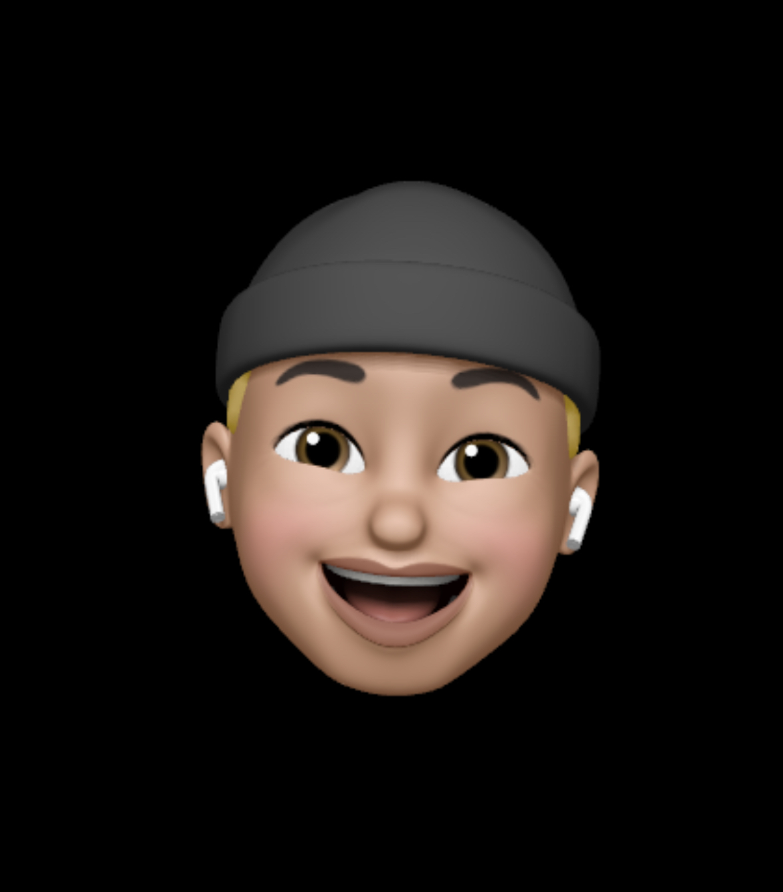

식단 영양정보 서비스
데이터 사이언스와의 융합 프로젝트로 YOLOv3를 통한 음식 객체 검출 후,
해당 음식의 영양정보와 사용자에 맞춘 일일 권장량을 제공하는 서비스입니다.
- Django
- Python
- YOLOv3
- ELK Stack
- MySQL
- AWS
Sever & Data-Engineer dev
최적화 중점으로 데이터를 다루는 개발자가 되겠습니다.
매출 관련 데이터를 다루며 분석에 대한 흥미를 가지게 되었고, 더 큰 세상을 경험하고자 빅데이터에 입문하게 되었습니다. 실제 웹 서비스를 구현해보며 제가 직접 무언가를 만들고 관리한다는 매력에 이끌려 Back-End 공부도 같이 병행 하였습니다. 프로젝트를 진행하며 데이터를 쓰기 편하고 안전한 형태로 가공하며 현장에서 업무 생산성과 효율성에 얼마나 큰 도움이 되는지 느끼게 되었습니다. 서비스를 구현하며 데이터를 다루고 분석할 수 있는 기반을 만들어 가는 개발자가 되겠습니다.
Python을 바탕으로 Django & Flask 프레임워크를 통해 웹서비스를 개발하고, 전반적인 완성도를 높이기 위해 HTML5, CSS, JavaScript 또한 공부하고 있습니다. AWS를 활용한 Kafka를 경험해보고, Elasticsearch와 Kibana를 활용하여 웹 Log 및 DB연동으로 시각화까지 직접 구현해보며 필요한 기술들을 꾸준하게 공부하고 있습니다.
데이터 수집(크롤링,API 등)을 통한 분석 및 시각화를 경험했습니다. 데이터 사이언스와의 협업을 통한 웹서비스 구현을 해보며 데이터 스키마 설계 또한 진행했었습니다. 초기 페이지에 따른 DB 설계 후, 실제 구축과정에서 지속적인 수정으로 힘들었던 경험이 있습니다. 차후 일어날 수 있는 변수에 대해 한번 더 신중하게 고민하면서 업무 효율을 높여 가려고 노력하고 있습니다.
스타벅스와 CJ CGV에서 Manager로 근무하며 현장경험을 바탕으로 명확한 의사소통 능력을 키워왔습니다. 현장에서 매번 일어나는 변수에 대해 디테일적인 부분을 고민하고 적용하며 고객들의 만족을 위해 노력해왔습니다. 또한 한층 발전 된 조직을 만들기 위해 관리 체계와 함께 구성원들의 성장을 지도하며 관리자로서 성장하였습니다.
A section of my range if work